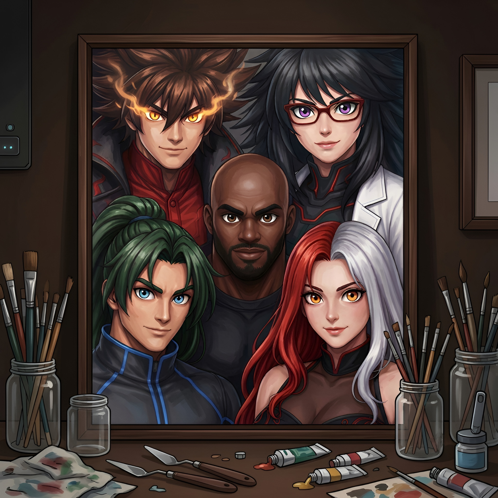

Em uma linha do tempo alternativa, a humanidade alcançou níveis extremos de tecnologia muito antes do esperado. Durante o surgimento dos primeiros ancestrais humanos, algo estranho alterou seu DNA, criando uma variação genética que se manifestaria séculos depois. Como resultado, alguns indivíduos passaram a nascer com habilidades extraordinárias, tornando-se super-humanos, enquanto outros sofriam mutações genéticas instáveis, transformando-se em criaturas monstruosas imprevisíveis.
Nesse mundo, grandes conflitos globais também ocorreram, incluindo guerras equivalentes às Guerras Mundiais, travadas com armas muito mais avançadas e lideradas por figuras históricas diferentes das conhecidas em nossa realidade. Após décadas de reconstrução e avanço acelerado, o planeta entrou em uma nova era dominada por megacorporações, organizações militares, super-humanos e tecnologias extremas.
Com o tempo, o heroísmo deixou de representar justiça absoluta: muitos heróis passaram a agir movidos por fama, poder, dinheiro ou interesses políticos, utilizando métodos brutais e frequentemente ignorando vidas inocentes. Em um mundo repleto de super-humanos, apenas cerca de 60 a 70 ainda são vistos como verdadeiramente confiáveis, mesmo estando longe de serem exemplos perfeitos.
Entre eles estão os Pulsebreakers: Igneus Kane, Aria Bastos, Drake Harper, Gale Skylark e Selena Ravenscroft. Diferente da maioria, o grupo ainda prioriza salvar civis acima de fama ou poder enquanto enfrenta supervilões, criaturas monstruosas, tecnologias fora de controle e ameaças capazes de levar o mundo à extinção.